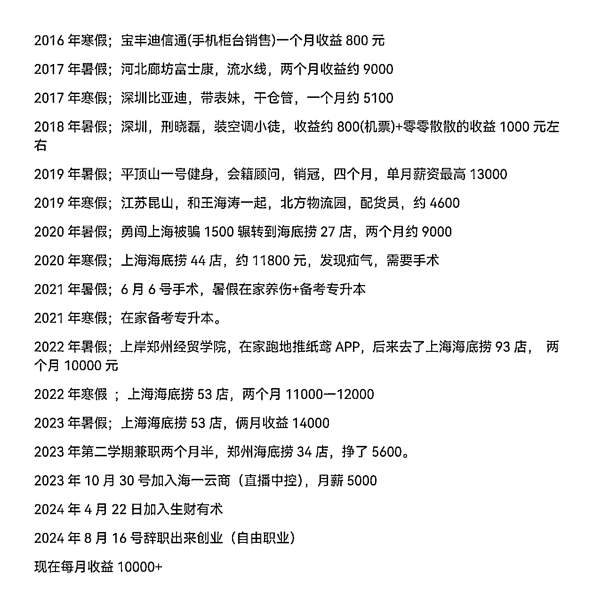
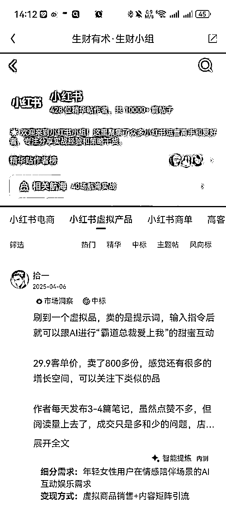

来源：https://shengcaiyoushu01.feishu.cn/docx/GsTjdHdWvoQemoxXFmlcs3CGnXe
大家好，我是河南圈友张微笑，去年刚毕业，加入生财满一年，目前是自由职业者，在做小红书虚拟资料。
相比于同龄人的毕业迷茫，生财给了我对未来充满希望的底气。我很清楚知道我未来的方向是哪里。生财把普通人搞钱的门槛降得很低很低，因为曾经的我是一名餐厅服务员，是富士康流水线上的一枚"螺丝钉"，是一直靠体力的劳动者，大家可以喊我“天选打工仔”。

是生财让我看到了很多的赚钱机会，也是在这里我得到了很多圈友的帮助。所以我希望你不要对自己怀疑，先去干，遇到困难了找人求教。以下是我平时使用生财的一些方法，希望对你有用。
主要内容有：
1.寻找哪些信息可以帮你搞钱。
2.在项目的进行中容易踩的坑。
3.如何得到前辈大佬的帮助。
4.如何让自己更值钱。
首先，如果你想做生意、创业赚钱，你得清楚世界上哪些事情能让你赚到钱。
其次，这件事的投入门槛要可控，即使失败了，成本也在可承受范围内，不会大幅降低你的生活质量。
以“生财有术”为例，你可以花2000多块钱的成本，获取几万条搞钱的消息。相比之下，摆地摊、做小生意或开个门店，成本可能要翻5到10倍。
当然这里你可能会说你想花钱去买某个互联网上的项目，我可以告诉你如果这个项目真的很赚钱，他为什么不自己招员工来放大。其次你也要善用生财有术的搜索引擎，互联网上90%的项目你都可以搜到，然后通过鱼丸去链接原作者，自己慢慢摸索，遇到卡点了，给原作者发个红包去求解答就行。
创业一定是不断解决问题的过程，而不是买套方法论/手册放在哪里不干，没有任何意义。即使你买了一套手册，在这个过程中依然会遇到困难需要你去克服。
此外，保持专注也很重要。如果你看到一个项目很想做，那就集中精力，花一两个月时间专注去做。刚开始时，按照帖子原作者的步骤一步步来，先不要搞原创。因为作为新手，你可能还不清楚原作者每一步的用意，所以听话照做很关键。因为基本上你能看到的拿到大结果的都是有自己的杠杆，这个杠杆可能是AI，兼职，员工，财务等等。
圈子也很重要。主动社交和建立链接至关重要。在推进项目时，你难免会遇到一些瓶颈，这时就需要主动寻求帮助。
以我为例，现在我每个月都会联系鱼丸，请他帮我对接2-3位同行业的圈友，加上微信交流。了解他们的最新动态，互相学习。
如果你不知道如何找到同业务类型的圈友，那生财小组可大有用处啦！以手机端网页版为例；在如下图这里

如果你是新手，向他人请教时，诚意是必不可少的。这种诚意并不需要高昂的成本，比如发个66或88元的红包，既表达了你的诚意，又不会造成经济负担。毕竟，我们都不喜欢被"白嫖"，对吧？这样的诚意往往能换来有价值的信息，帮你少走很多弯路。因为没有人会不喜欢一个"野心勃勃且知恩图报的小野狼"。
其实，付费也是一种双向筛选的过程。你通过付费筛选出对项目有帮助的关键信息，而对方也在筛选那些真正有诚意的合作者。毕竟，大家萍水相逢，谁也不欠谁，对吧？
其次，多发起聚会也是建立社交网络的有效方式。当你主动组织聚会时，自然需要添加所有参与者的微信，对吧？这样不仅能扩大你的社交圈，还能通过认真聆听他们的交流，获得有价值的见解。
参加聚会的成本其实并不高。几个人一起吃顿饭，花费不过几十元，最多也就一两百元。这样的投入完全在可控范围内。而且我还发现聚会是补充心力的一种方式，面对面的聊更让你觉得真实，更有信心可以做到和他们一样。
在生财这个几万人的圈子里，信息传播速度极快。如果你做了不真诚的事，很快就会被圈内人知晓。相反，如果你在群内树立起真诚的人设，你会发现越来越多的大佬和其他人主动找你合作。因为大家都希望与真诚的人合作。
最后，要善于展示自己的优势。真诚地多发帖子，展示你的专业能力和个人魅力，这样才能吸引更多志同道合的伙伴。如果你没有什么专业能力，那就去多做利他的事情，多去帮助别人。这也是一种提高自己影响力的关键一环。这里我说的具体一点吧，当志愿者或者其他圈友发起聚会的时候积极参与。
展示自己的画面，关键在于如何发帖。我认为帖子要简短精炼，不要太长。因为现在信息过载，大家不喜欢冗长的内容。
这里插个八卦，分享一下我是如何向亦仁展示自己的。其实我就说了两句话："你们的公司很有价值。我曾经是个刷盘子洗碗的，今天能出来创业，是因为你们公司。"
这就是我给自己贴的标签「草根创业者」。我自己以前就是富士康拧螺丝的，或者海底捞洗碗的。这些故事就像爽文一样，给自己打上鲜明的标签。我想说的是，你要主动展示自己，用短平快的方式把自己的故事写得精彩。
最后，我想说的是，加入生财之后，你会有一个新的观念。过去刷抖音，觉得那些视频很快乐，但现在你会用不同的视角去看待这些内容。
今天在看短视频时，我产生了一个新的视角。不知道大家是否和我有同样的感受？我不再只是单纯地欣赏视频内容，而是会好奇：这个发布者是如何实现变现的？
我热衷于在生财拆解他们的变现模式，这种好奇心已经超越了单纯的娱乐。
创业之路大家都是连滚带爬的往前走着，这一路必然有很多困难，以上内容也只是冰山一角。这条路上还有很多困难是需要你去经历的，但是我希望你可以勇于去向比你厉害的人提问和承认自己的缺点。
还有就是关于副业，我想分享一个重要的经验：在副业稳定运行至少三个月，并且收益达到主业五倍以上时，再考虑辞职。这是我亲身经历过的教训。
因为当你的副业收入不稳定就辞职，一旦你的收益不稳定，就会影响你在创业过程中的决策。
其实你可以考虑雇佣在校大学生来协助处理那些标准化的工作内容。
另外，频繁更换项目并不是明智之举。很多项目都需要通过持续投入和加杠杆，才能真正实现可观的收益。